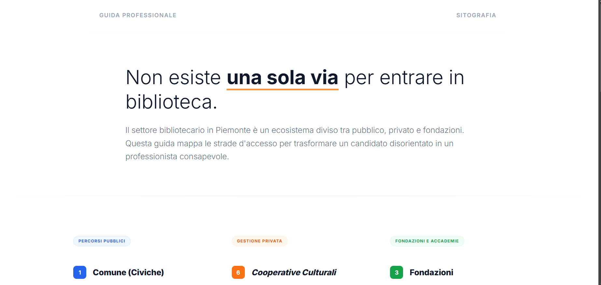
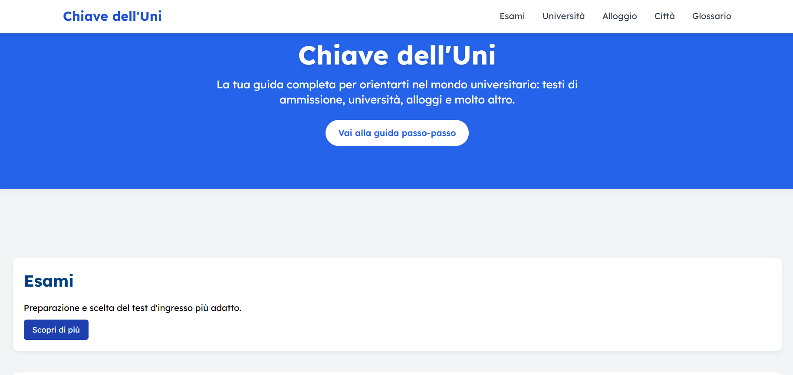
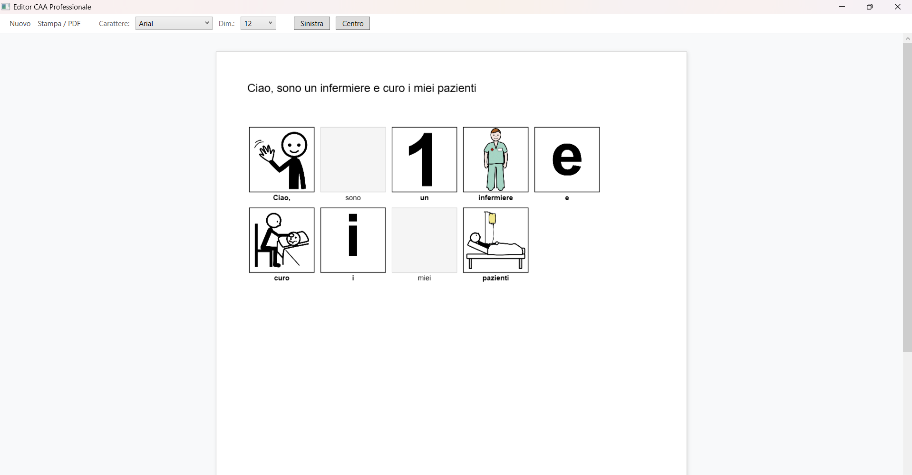
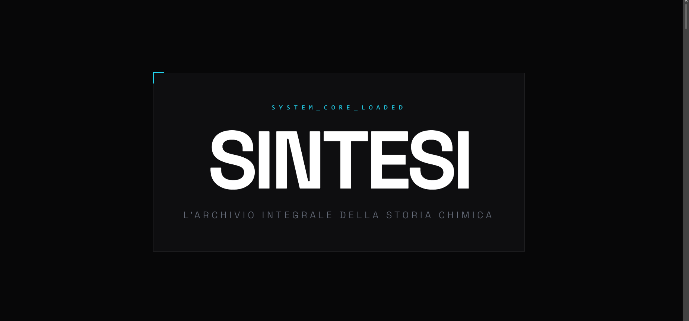
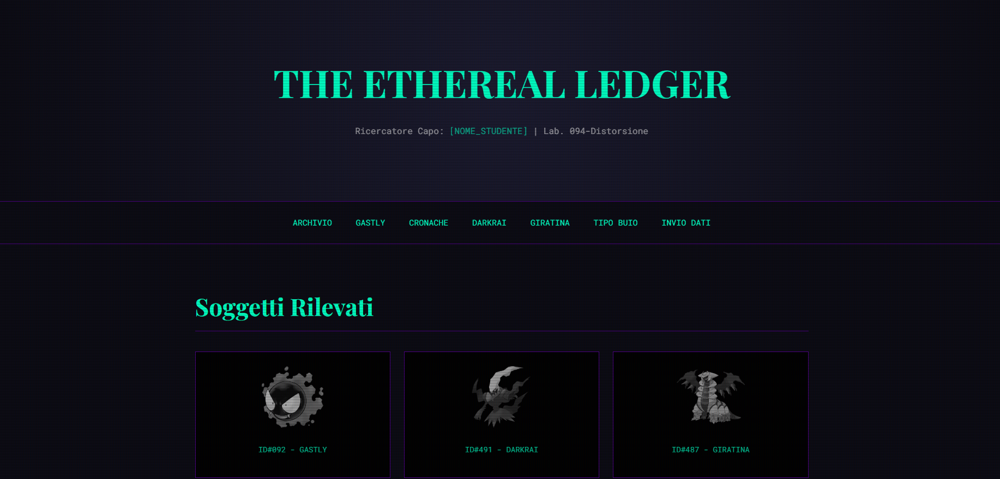
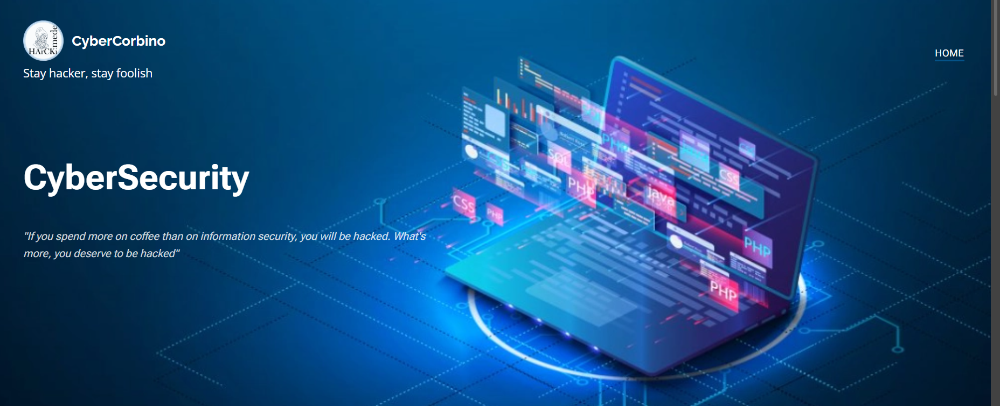
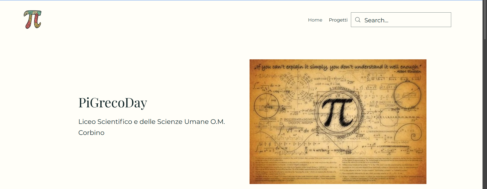

Orientamento bibliotecario
Un sito per l'orientamento al mondo bibliotecario tra cooperative, fondazioni e concorsi.
Progetto sistemi digitali accessibili dove i dati incontrano le persone.
Il mio percorso ha radici nelle Scienze Applicate e nella programmazione in Python, ma si è evoluto in una missione precisa: trasformare il caos dell'infodemia in strutture dati chiare e accessibili.
Specializzato nella gestione di metadati e database, mi dedico a rendere il web un luogo davvero universale. Progetto interfacce inclusive basate su ricerca, workshop e interviste, garantendo un'esperienza utente senza barriere.
Unisco lo sviluppo frontend (HTML, CSS, TailwindCSS, JavaScript) con strategie di SEO/SEM, per rendere più efficace la ricercabilità e la visibilità del sito online, e principi di User-Centered Design per renderlo più navigabile ed efficiente in base al proprio target.
Ho esperienza con piattaforme come WordPress, Altervista, Wix, Webnode e Google Sites.
Ingegneria informatica
Focus su sviluppo web, Python e Web Security.
Gestione di biblioteche digitali e metadati.
Analisi e sviluppo di interfacce conformi WCAG per ogni tipologia di utenza.
Ottimizzazione SEO e implementazione normative GDPR.

Un sito per l'orientamento al mondo bibliotecario tra cooperative, fondazioni e concorsi.

Sito "Chiave dell'Uni". Focus su semplicità e accessibilità. Progetto curato dal design alla SEO.

Un traduttore digitale da caratteri e testi quotidiani in caratteri CAA, ARASAAC. Progetto in corso.

Sito one-scroll sulla storia della chimica in 20 personaggi.

Un sito creato per un GDR Pokémon. Blog di un ricercatore specializzato nel tipo Spettro.

Piattaforma di divulgazione su sicurezza in rete e crittografia.

Sito scolastico interattivo per l'elenco dei progetti studenteschi.
Se vuoi collaborare a progetti accessibili o legati ai beni culturali, scrivimi a gcorcodel05@email.it.